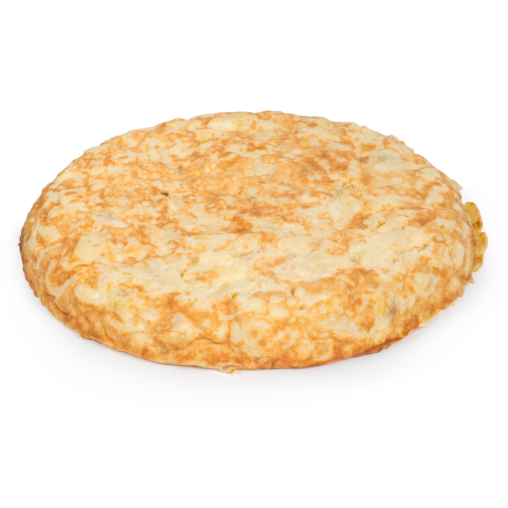

PASOS
Pasos para hacer Tortilla de Patatas
- Pelar y cortar las patatas: Corta las patatas en rodajas finas o en cubos pequeños.
- Freír las patatas: Calienta el aceite en una sartén grande y fríe las patatas (y la cebolla, si usas) a fuego medio hasta que estén tiernas y ligeramente doradas. Escurre el exceso de aceite.
- Batir los huevos: En un bol, bate los huevos con sal y pimienta.
- Mezclar: Añade las patatas (y la cebolla) al bol con los huevos batidos y mezcla bien.
- Cocinar la tortilla: En la misma sartén, añade un poco del aceite utilizado y vierte la mezcla. Cocina a fuego medio-bajo, moviendo un poco la sartén para que no se pegue. Cuando esté dorada por un lado, voltea la tortilla con la ayuda de un plato y cocina el otro lado.
- Servir: Una vez cocida al gusto, retírala del fuego y déjala reposar un poco antes de cortarla.
